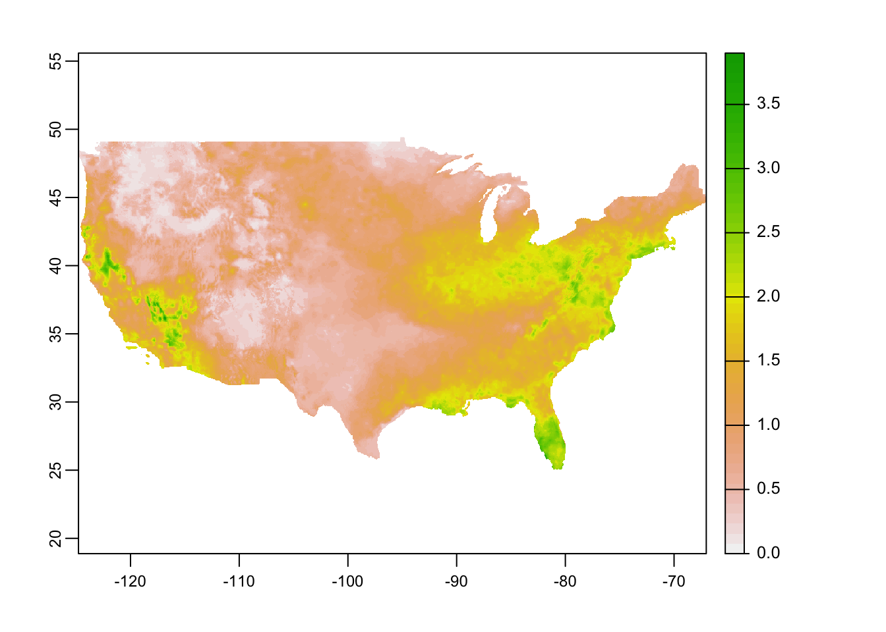

9.5 gridMET
gridMET is a dataset of daily meteorological data that covers the contiguous US since 1979. It spatial resolution is the same as PRISM data at 4-km by 4-km. Indeed gridMET is a product of combining PRISM and Land Data Assimilation System (https://ldas.gsfc.nasa.gov/nldas/NLDAS2forcing.php) (in particular NLDAS-2). It offer more variables than PRISM, including maximum temperature, minimum temperature, precipitation accumulation, downward surface shortwave radiation, wind-velocity, humidity (maximum and minimum relative humidity and specific humidity. It also offers derived products such as reference evapotranspiration (calculated based on Penman-Montieth equation).
You can use the downloadr::download() function to download gridMET data by variable-year. For example, to download precipitation data for 2018, you can run the following code:
downloader::download(
url = "http://www.northwestknowledge.net/metdata/data/pr_2018.nc",
destfile = "Data/pr_2018.nc",
mode = 'wb'
)We set the url of the dataset of interest the url option, set the destination file name, and the mode to wb for a binary download.
All the gridMET datasets for direct download has “http://www.northwestknowledge.net/metdata/data/” at the beginning, followed by the file name (here, pr_2018.nc). The file names follow the convention of variable_abbreviation_year.nc. So, we can easily write a loop to get data for multiple variables over multiple years.
Here is the list of variable abbreviations:
- sph: (Near-Surface Specific Humidity)
- vpd: (Mean Vapor Pressure Deficit)
- pr: (Precipitation)
- rmin: (Minimum Near-Surface Relative Humidity)
- rmax: (Maximum Near-Surface Relative Humidity)
- srad: (Surface Downwelling Solar Radiation)
- tmmn: (Minimum Near-Surface Air Temperature)
- tmmx: (Maximum Near-Surface Air Temperature)
- vs: (Wind speed at 10 m)
- th: (Wind direction at 10 m)
- pdsi: (Palmer Drought Severity Index)
- pet: (Reference grass evaportranspiration)
- etr: (Reference alfalfa evaportranspiration)
- erc: (model-G)
- bi: (model-G)
- fm100: (100-hour dead fuel moisture)
- fm1000: (1000-hour dead fuel moisture)
As another example, if you are interested in downloading the wind speed data for 2020, then you can use the following code.
downloader::download(
url = "http://www.northwestknowledge.net/metdata/data/vs_2020.nc",
destfile = "Data/vs_2020.nc",
mode = 'wb'
)9.5.1 Practical Examples
Suppose your final goal is to get average daily precipitation (pr) and reference grass evapotranspiration (pet) from 2015 through 2020 for each of the counties in California.
First get county boundaries for California:
CA_counties <- tigris::counties(state = "CA") %>%
dplyr::select(STATEFP, COUNTYFP)Before writing a loop, let’s work on a single case (pet for 2015). First, we download and read the data.
#--- download data ---#
downloader::download(
url = "http://www.northwestknowledge.net/metdata/data/pet_2015.nc",
destfile = "Data/pet_2015.nc",
mode = 'wb'
)
#--- read the raster data ---#
(
pet_2015 <- rast("Data/pet_2015.nc")
)class : SpatRaster
dimensions : 585, 1386, 365 (nrow, ncol, nlyr)
resolution : 0.04166667, 0.04166667 (x, y)
extent : -124.7875, -67.0375, 25.04583, 49.42083 (xmin, xmax, ymin, ymax)
coord. ref. : +proj=longlat +datum=WGS84 +no_defs
source : pet_2015.nc
varname : potential_evapotranspiration (pet)
names : poten~42003, poten~42004, poten~42005, poten~42006, poten~42007, poten~42008, ...
unit : mm, mm, mm, mm, mm, mm, ... As you can see, it is a multi-layer raster object where each layer represents a single day in 2015. Here is a quick visualization of the first layer.
plot(pet_2015[[1]]) 
Now, we can use exactexactr::exact_extract() to assign cell values to each county and transform it to a more convenient form:
pet_county <-
#--- extract data for each county ---#
exact_extract(pet_2015, CA_counties, progress = FALSE) %>%
#--- list of data.frames into data.table ---#
rbindlist(idcol = "rowid")
#--- check the dimension of the output ---#
dim(pet_county) [1] 28201 367As you can see the data has 367 columns: 365 (days) + 1 (rowid) + 1 (coverage fraction). Let’s take a look at the name of the first six variables.
head(names(pet_county))[1] "rowid"
[2] "potential_evapotranspiration_day=42003"
[3] "potential_evapotranspiration_day=42004"
[4] "potential_evapotranspiration_day=42005"
[5] "potential_evapotranspiration_day=42006"
[6] "potential_evapotranspiration_day=42007"The 5-digit number at the end of the name of the variables for evapotranspiration represents days since Jan 1st, 1900. This can be confirmed using ncdf4:nc_open() (see the middle of the output below under day of 4 dimensions):
ncdf4::nc_open("Data/pet_2015.nc") File Data/pet_2015.nc (NC_FORMAT_NETCDF4):
1 variables (excluding dimension variables):
unsigned short potential_evapotranspiration[lon,lat,day] (Chunking: [231,98,61]) (Compression: level 9)
_FillValue: 32767
units: mm
description: Daily reference evapotranspiration (short grass)
long_name: pet
standard_name: pet
missing_value: 32767
dimensions: lon lat time
grid_mapping: crs
coordinate_system: WGS84,EPSG:4326
scale_factor: 0.1
add_offset: 0
coordinates: lon lat
_Unsigned: true
4 dimensions:
lon Size:1386
units: degrees_east
description: longitude
long_name: longitude
standard_name: longitude
axis: X
lat Size:585
units: degrees_north
description: latitude
long_name: latitude
standard_name: latitude
axis: Y
day Size:365
description: days since 1900-01-01
units: days since 1900-01-01 00:00:00
long_name: time
standard_name: time
calendar: gregorian
crs Size:1
grid_mapping_name: latitude_longitude
longitude_of_prime_meridian: 0
semi_major_axis: 6378137
long_name: WGS 84
inverse_flattening: 298.257223563
GeoTransform: -124.7666666333333 0.041666666666666 0 49.400000000000000 -0.041666666666666
spatial_ref: GEOGCS["WGS 84",DATUM["WGS_1984",SPHEROID["WGS 84",6378137,298.257223563,AUTHORITY["EPSG","7030"]],AUTHORITY["EPSG","6326"]],PRIMEM["Greenwich",0,AUTHORITY["EPSG","8901"]],UNIT["degree",0.0174532925199433,AUTHORITY["EPSG","9122"]],AUTHORITY["EPSG","4326"]]
19 global attributes:
geospatial_bounds_crs: EPSG:4326
Conventions: CF-1.6
geospatial_bounds: POLYGON((-124.7666666333333 49.400000000000000, -124.7666666333333 25.066666666666666, -67.058333300000015 25.066666666666666, -67.058333300000015 49.400000000000000, -124.7666666333333 49.400000000000000))
geospatial_lat_min: 25.066666666666666
geospatial_lat_max: 49.40000000000000
geospatial_lon_min: -124.7666666333333
geospatial_lon_max: -67.058333300000015
geospatial_lon_resolution: 0.041666666666666
geospatial_lat_resolution: 0.041666666666666
geospatial_lat_units: decimal_degrees north
geospatial_lon_units: decimal_degrees east
coordinate_system: EPSG:4326
author: John Abatzoglou - University of Idaho, jabatzoglou@uidaho.edu
date: 04 July 2019
note1: The projection information for this file is: GCS WGS 1984.
note2: Citation: Abatzoglou, J.T., 2013, Development of gridded surface meteorological data for ecological applications and modeling, International Journal of Climatology, DOI: 10.1002/joc.3413
note3: Data in slices after last_permanent_slice (1-based) are considered provisional and subject to change with subsequent updates
note4: Data in slices after last_provisional_slice (1-based) are considered early and subject to change with subsequent updates
note5: Days correspond approximately to calendar days ending at midnight, Mountain Standard Time (7 UTC the next calendar day)This is universally true for all the gridMET data. We can use this information to recover date. First, let’s transform the data from a wide format to a long format for easier operations:
pet_county <-
#--- wide to long ---#
melt(pet_county, id.var = c("rowid", "coverage_fraction")) %>%
#--- remove observations with NA values ---#
.[!is.na(value), ]
#--- take a look ---#
pet_county rowid coverage_fraction variable value
1: 1 0.004266545 potential_evapotranspiration_day=42003 2.3
2: 1 0.254054248 potential_evapotranspiration_day=42003 2.2
3: 1 0.175513789 potential_evapotranspiration_day=42003 2.0
4: 1 0.442011684 potential_evapotranspiration_day=42003 2.1
5: 1 1.000000000 potential_evapotranspiration_day=42003 2.2
---
10115971: 58 0.556854963 potential_evapotranspiration_day=42367 2.1
10115972: 58 0.197555855 potential_evapotranspiration_day=42367 2.7
10115973: 58 0.224901110 potential_evapotranspiration_day=42367 2.2
10115974: 58 0.554238617 potential_evapotranspiration_day=42367 2.2
10115975: 58 0.272965431 potential_evapotranspiration_day=42367 2.1We now use str_sub() to get 5-digit numbers from variable, which represents days since Jan 1st, 1900. We can then recover dates using the lubridate package.
pet_county[, variable := str_sub(variable, -5, -1) %>% as.numeric()] %>%
#--- recover dates ---#
.[, date := variable + lubridate::ymd("1900-01-01")]
#--- take a look ---#
pet_county rowid coverage_fraction variable value date
1: 1 0.004266545 42003 2.3 2015-01-01
2: 1 0.254054248 42003 2.2 2015-01-01
3: 1 0.175513789 42003 2.0 2015-01-01
4: 1 0.442011684 42003 2.1 2015-01-01
5: 1 1.000000000 42003 2.2 2015-01-01
---
10115971: 58 0.556854963 42367 2.1 2015-12-31
10115972: 58 0.197555855 42367 2.7 2015-12-31
10115973: 58 0.224901110 42367 2.2 2015-12-31
10115974: 58 0.554238617 42367 2.2 2015-12-31
10115975: 58 0.272965431 42367 2.1 2015-12-31Finally, let’s calculate the coverage-weighted average of pet by county-date.
pet_county_avg <-
pet_county[,
.(value = sum(value * coverage_fraction) / sum(coverage_fraction)),
by = .(rowid, date)
] %>%
setnames("value", "pet")Since rowid value of n corresponds to the n th row in CA_counties, it is easy to merge pet_county_avg with CA_counties (alternatively, you can use cbind()).
CA_pet <- CA_counties %>%
mutate(rowid = seq_len(nrow(.))) %>%
left_join(pet_county_avg, ., by = "rowid")Now that we know how to process a single gridMET dataset, we are ready to write a function that goes through the same for a choice of gridMET dataset and then write a loop to achieve our goal. Here is the function:
get_grid_MET <- function(var_name, year) {
#--- for testing ---#
# var_name <- "pet"
# year <- 2020
target_url <-
paste0(
"http://www.northwestknowledge.net/metdata/data/",
var_name, "_", year,
".nc"
)
file_name <-
paste0(
"Data/",
var_name, "_", year,
".nc"
)
downloader::download(
url = target_url,
destfile = file_name,
mode = 'wb'
)
#--- read the raster data ---#
temp_rast <- rast(file_name)
temp_data <-
#--- extract data for each county ---#
exact_extract(temp_rast, CA_counties) %>%
#--- list of data.frames into data.table ---#
rbindlist(idcol = "rowid") %>%
#--- wide to long ---#
melt(id.var = c("rowid", "coverage_fraction")) %>%
#--- remove observations with NA values ---#
.[!is.na(value), ] %>%
#--- get only the numeric part ---#
.[, variable := str_sub(variable, -5, -1) %>% as.numeric()] %>%
#--- recover dates ---#
.[, date := variable + ymd("1900-01-01")] %>%
#--- find daily coverage-weight average by county ---#
.[,
.(value = sum(value * coverage_fraction) / sum(coverage_fraction)),
by = .(rowid, date)
] %>%
.[, var := var_name]
return(temp_data)
}Let’s now loop over the variables and years of interest. We first set up a dataset of variable-year combinations for which we loop over.
#--- create a dataset of parameters to be looped over---#
(
par_data <-
expand.grid(
var_name = c("pr", "pet"),
year = 2015:2020
) %>%
data.table() %>%
.[, var_name := as.character(var_name)]
)We now loop over the rows of par_data in parallel:
#--- parallel processing ---#
library(future.apply)
plan(multiprocess, workers = 12)
(
all_data <-
future_lapply(
seq_len(nrow(par_data)),
function(x) get_grid_MET(par_data[x, var_name], par_data[x, year])
) %>%
rbindlist() %>%
dcast(rowid + date ~ var, value.var = "value")
) rowid date pet pr
1: 1 2015-01-01 1.676250 5.085478e-05
2: 1 2015-01-02 1.333865 3.675661e-02
3: 1 2015-01-03 1.299940 0.000000e+00
4: 1 2015-01-04 1.687250 0.000000e+00
5: 1 2015-01-05 1.453381 0.000000e+00
---
127132: 58 2020-12-27 1.851531 1.670983e+01
127133: 58 2020-12-28 1.025404 1.435838e+01
127134: 58 2020-12-29 1.559160 0.000000e+00
127135: 58 2020-12-30 2.048376 1.066704e-01
127136: 58 2020-12-31 1.398130 1.841696e-01